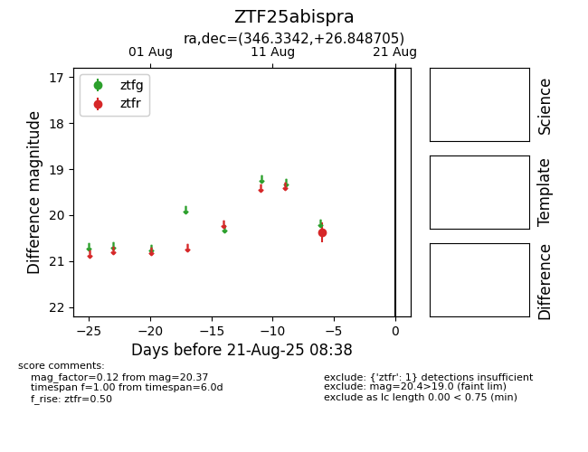

Target ZTF25abispra at 2025-08-21 08:38, see:
FINK: fink-portal.org/ZTF25abispra
Lasair: lasair-ztf.lsst.ac.uk/objects/ZTF25abispra
ALeRCE: alerce.online/object/ZTF25abispra
alt names
ZTF25abispra (ztf,alerce)
coordinates:
equatorial (ra, dec) = (346.3342,+26.84871)
galactic (l, b) = (95.4485,-30.29996)
photometry
last ztfr=20.37
1 ztfr detections
